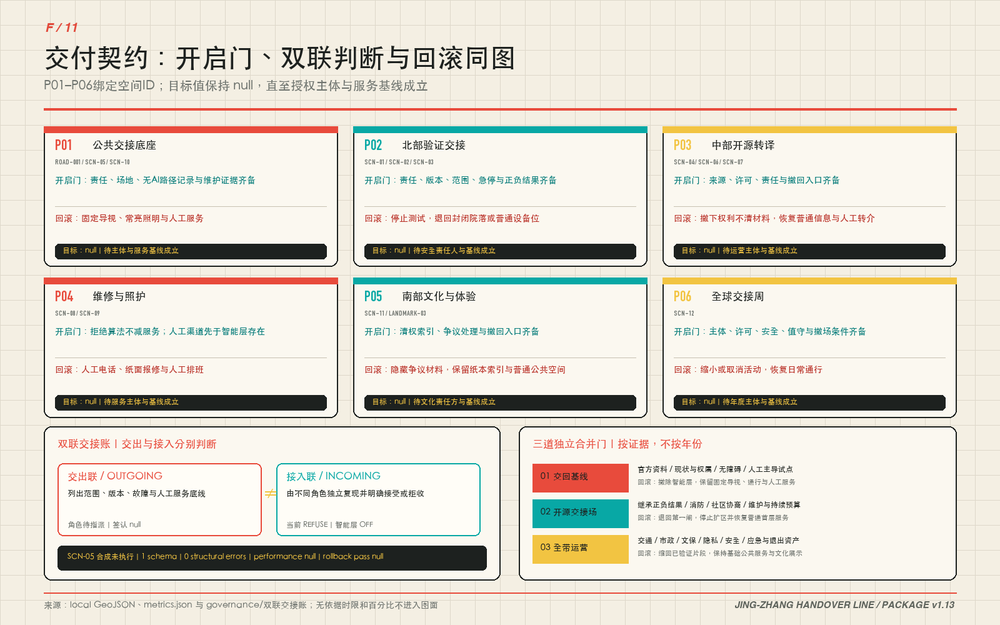

全球人工智能产业高地和朝圣地 / 可复现协议 × 可纠错公共地标
京张交接线
把铁路交接班转化为AI城市协议：六个条件试点包经三道证据门递进；交出与接入必须分开判断，未决项不得在换班中消失。北纬社区等区域接口只在资料与主体获授权后接入。
01BUILD → VERIFY
模型、机器人、算力和数据带着版本、风险、人工负责人和停用办法进入测试。
02VERIFY → SHARE
结果、许可、失败和适用边界共同公开；开源不等于暴露个人数据。
03SHARE → SERVE
公共服务保留人工窗口、无AI等价服务、申诉路径与退出记录。
人工接管不是备用功能，
而是公共空间的基础设施。
01 / OVERVIEW总览地图
一条约9.50公里的概念慢行主轴穿过临时总体范围，三座交接场对应研发—验证、验证—开源、开源—服务。八条东西支线表达缝合方向，所有线位都不是道路红线或工程结论。
 geometry/site_boundary.geojson + roads.geojson + key_areas.geojsonPROVISIONAL BOUNDARY / EPSG:4548
02 / SCOPE & LAND USE
geometry/site_boundary.geojson + roads.geojson + key_areas.geojsonPROVISIONAL BOUNDARY / EPSG:4548
02 / SCOPE & LAND USE三层范围 · 用地分区
统筹研究决定生态机制，总体设计把机制落成连续结构，重点区用可运行的场景验证结构。11个拓扑要素完整覆盖临时场地且无设计性重叠；代码使用公开国土空间分类子集，不表达现状权属或审定用地。
统筹研究范围
研究产业、文化、未来城市和三区两翼的协同回路，把研发、验证、开源、服务和复盘组织为共同协议。
43.6 km² / 战略与机制总体设计范围
用地、更新、建筑类型、慢行、蓝绿、市政接口、项目与分期共同形成可审查证据。
约11.4 km² / 空间与实施重点区域
众智园、AI原点和大钟寺分别承担Build→Verify、Verify→Share和Share→Serve。
3处 / 详细场景验证 geometry/land_use.geojson / 11 features / zero intentional gapsDESIGN PROPOSAL, NOT STATUTORY LAND USE
03 / KEY AREAS
geometry/land_use.geojson / 11 features / zero intentional gapsDESIGN PROPOSAL, NOT STATUTORY LAND USE
03 / KEY AREAS重点区域
三处临时重点区不是三个主题园，而是三次责任转换。每一处都同时设置功能、空间动作、场景、人工接管和实施门槛。
PROV-KEY-001研制交接场
BUILD → VERIFY
- 公开验证街与共享测试院
- 模型红队、机器人路权、端侧能耗沙盒
- 试验面与公众参观面安全分离
- 版本、风险、停机与责任人公开
门槛：企业授权、道路条件、安全论证与现场安全员。
PROV-KEY-002开源交接场
VERIFY → SHARE
- 公开交接桌与校园成果接力站
- 公共翻译、无障碍副驾、社区协作屋
- 首层连续、夜间分级、居民界面低扰动
- 许可、撤回、人工窗口并列
门槛：成果许可、隐私审查、居民协商与空间短期试用。
PROV-KEY-003城市交接场
SHARE → SERVE
- 城市交接厅、百年值班簿、口述史亭
- 智能原生服务不依赖人脸或强制App
- 保留非消费通行、休息与人工顾问
- 公开投诉、修复和退出记录
门槛：轨道、权属、消防、文保与商业公共性核验。
 geometry/key_areas.geojson / three provisional polygonsDIRECTIONAL DESIGN FOR PROFESSIONAL DEVELOPMENT
geometry/key_areas.geojson / three provisional polygonsDIRECTIONAL DESIGN FOR PROFESSIONAL DEVELOPMENT
04 / CIVIC GROUND交通慢行 · 蓝绿公共空间
主轴与八条支线先保证普通通行，再叠加可拔插智能层。概念绿地提供树荫、雨洪与停留；公共交接面容纳人工窗口、测试展示和无AI服务。断电或停用时，照明、导视、触觉地图和求助仍然存在。
 roads.geojson + green_space.geojson + public_space.geojsonCONNECTIVITY INTENT / NO ROAD REDLINE CLAIM
roads.geojson + green_space.geojson + public_space.geojsonCONNECTIVITY INTENT / NO ROAD REDLINE CLAIM 05 / REVERSIBLE SERVICESAI 场景
每个场景都带四张单：最小数据、责任人、人工接管、退出记录。失联、越界、低置信或任何人提出异议时，智能功能停用，基础服务继续。
12
SCN-01 / INDUSTRY TEST模型红队交接台
版本、测试样本与风险条目进入受控评审。
人工评审 + 纸面风险登记
SCN-02 / INDUSTRY TEST机器人路权沙盒
仅在封闭段记录测试轨迹，不进入公开道路。
安全员物理停机 + 封闭测试
SCN-03 / INDUSTRY TEST端侧能耗试验站
独立计量任务负载、能耗和温升。
人工停机 + 离线电表
SCN-04 / INDUSTRY TEST数据授权演练场
只处理自愿授权记录，演练撤回与删除。
线下授权单 + 即时删除窗口
SCN-05 / PUBLIC SERVICE无障碍路径副驾
用户主动输入障碍，不连续跟踪个人位置。
触觉地图 + 人工问路
SCN-06 / PUBLIC SERVICE公共服务翻译台
翻译现场文本，涉及权益决定时必须交人。
人工窗口 + 多语纸本
SCN-07 / KNOWLEDGE校园成果接力站
只展示作者授权的成果元数据与许可。
人工策展 + 开放目录
SCN-08 / OPERATIONS维修可见驿
匿名报修、工单状态与维护责任公开可查。
电话报修 + 人工派单
SCN-09 / CARE社区照护排班桌
算法建议可拒绝，不影响居民获得服务。
工作人员电话排班
SCN-10 / NIGHT SHIFT城市夜班安全灯
只感知设备状态，不采集人脸。
固定照明 + 人工巡查
SCN-11 / CULTURE京张口述史问答亭
基于清权馆藏索引，出处不确定时不生成事实。
人工讲解 + 纸本目录
SCN-12 / EVENT全球交接周线路
串联试验、开源、文化与公共服务。
固定导视 + 志愿者服务
06 / BUILDINGS & DELIVERY建筑 · 更新项目
二十个建筑要素是类型试验单元，不是现状盘点或拆除清单。先以运营和可移动构件验证需求，再进行适应性修缮；逐栋测绘、结构、权属、消防和文保核验完成前，不形成确定拆改留结论。
四步判定
- 保留 R：继续使用并补齐现状档案。
- 修缮 A：优先消防、节能、无障碍和首层开放。
- 插入 I：只用可撤除构件和短期使用验证。
- 待核 D：等待逐栋调查，不等同于拆除。
十二项最小项目
交接线基础导视、模型红队台、机器人沙盒、能耗站、公开交接台、成果接力站、无障碍副驾、维修可见驿、城市交接厅、百年值班簿、口述史亭、全球交接周线路。
每项必须写明责任人、许可、维护、退出、数据删除与基础服务延续。
PHASE 01资料基线门
官方资料、现状盘点、无障碍基线与三个低风险人工主导试点必须共同通过。
PHASE 02权属与协同门
继承第一闸正负结果，权属、消防、社区协商、维护与持续预算同时满足。
PHASE 03专业与持续门
交通、市政、文保、隐私、安全、应急与退出资产全部经专业复核后才讨论扩区。

RACI + BINARY GATES + DUAL-CONTROL SHIFT LEDGERCALIBRATION TARGETS NULL UNTIL OWNER AND BASELINE EXIST
07 / DUAL-CONTROL SHIFT LEDGER双联交接账：
一方交出，另一方才能接入
双联交接账 0.3 把同一次换班拆成两次独立判断。交出方不能代替接入方签收；接入方必须复现最小证据后明确接受或拒收。未决项保持开放，智能层默认关闭。
交出联 / OUTGOING
- 声明对象、版本、适用范围与校验和
- 逐项列出已知失败、未决项与回滚动作
- 性能目标保持 null，直到主体与基线成立
- 交出只证明材料齐备，不证明接入成功
接入联 / INCOMING
- 由不同角色独立复现最小检查
- 逐项回应未决项，不得静默消失
- 只能明确 ACCEPT 或 REFUSE
- 拒收或证据缺失时维持人工服务并关闭智能层
SCHEMADraft 2020-12 元模式校验PASS
SCN-05 SAMPLE合成、未执行、角色未指派；仅证明结构可解析PARSEABLE
OPERATION未完成真实复现、接入签收或回滚演练NOT VERIFIED
查看 Schema · 查看合成样例 · 查看校验报告
08 / RECALCULABLE EVIDENCE核心指标
数字从GeoJSON、公式与假设生成，不从图面抄录。临时边界替换后可重算；法定强度与高度没有公开审定值，因此保持未知。
≈11.4km² 临时场地EPSG:4548多边形计算；低置信度。
≈19.8%概念绿地比例结构性绿地，不是现状净增或法定指标。
≈9.1%公共交接面比例支持非消费使用与人工服务。
≈9.5 km连续交接线概念慢行主轴，不是道路红线。
≈18.9 km概念线路总长主轴加八条东西连接意图。
12 / 4场景 / 产业验证全部可逆，四个只在沙盒测试。
20建筑类型单元不等于现状建筑或获批规模。
3条件触发分期不随日历自动实施。
32概念接口目录字段存在不等于部署或逐对象验证。
1机器可读交接协议Draft 2020-12 JSON Schema。
0合成样例结构错误只证明结构，不证明运行效果。
4可纠错公共地标启用闸、异议与退出均可定位。
UNKNOWN BY DESIGN容积率 · 建筑高度 · 权属 · 道路红线 · 市政容量 · 投资 · 产值不以模型推断替代审定控制与专业调查。
 metrics.json × geometry/*.geojson × assumptions.jsonDISPLAY VALUES ROUNDED / SOURCE VALUES PRESERVED
09 / REVIEW LEDGER
metrics.json × geometry/*.geojson × assumptions.jsonDISPLAY VALUES ROUNDED / SOURCE VALUES PRESERVED
09 / REVIEW LEDGER任务覆盖 · 自检状态
机器检查证明文件完整、几何有效、指标一致和证据可追溯；它不替代城市规划、建筑、交通、景观、市政、文保、法律与公众的最终判断。
任务覆盖
- 公告 1.3：世界级生态、新城市形态、人才城区
- 公告 1.4：统筹、总体、三处重点区域
- 公告 1.5：产业、更新、交通市政、公园与风貌
- agent.1—6：命名、案例、场景、地标、文化、运营
- 6项标准 + 15项专业设计深度
自检状态
BOUNDARY临时属性与重算触发器已保留PASS
TOPOLOGY用地完整覆盖且无设计重叠PASS
METRICS面积、比例与数量可追溯PASS
TAKEOVER十二场景有人工接管与退出PASS
OFFLINE无CDN、远程字体、API或跟踪PASS
来源
- 征集公告、任务书与仓库场地资料包
- 临时边界与重点区只作概念计算
- 六个国际案例仅转述机构官网机制
- 全部图形、符号与排版程序化原创
- 详见 sources.json 与 copyright_statement.md
假设
- 官方边界替换后重算全部图层与指标
- 控规、权属、道路、市政、消防、文保待补
- 建筑单元不是拆改留结论
- AI场景未获正式部署、采购或运营批准
- 详见 assumptions.json 与 constraints.geojson